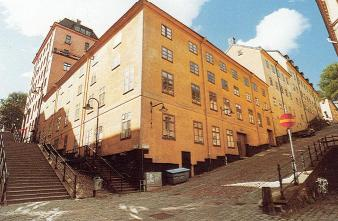
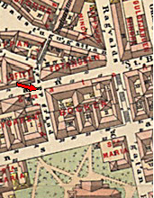
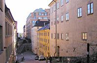

Södermalm i tid och rum. Stockholm
Hörnet Brännkyrkagatan 13/ Ragvaldsgatan 4. I bakgrunden Brännkyrkagatan 15. År 1904. 1910. Brännkyrkagatan 15 i hörnet av Maria Trappgränd från väster. Husdelen till höger om portgången byggdes ca 1740. Hörndelen vid Brännkyrkagatan är från 1762. I förlängningen av detta hus utfördes år 1785 en omfattande tillbyggnad åt Brännkyrkagatan.

Hörnpartiet av huset uppfördes 1760 med utnyttjande av äldre murar från 1730-talet. Tillbyggt västerut 1819. År 1837 byggdes huset på med två våningar, torkbottnar för det sockerbruk som funnits i huset sedan 1700-talets mitt. År 1858 byggdes huset om till bostäder. Idag finns här lokaler för konstnärer.
 |   2004 2004 |